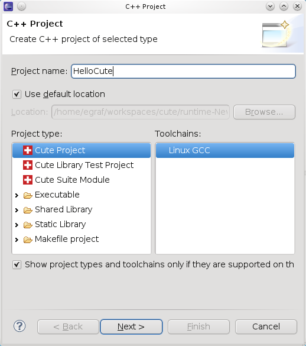
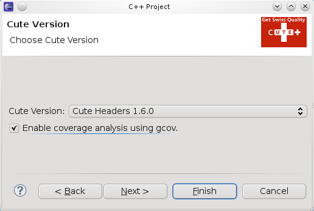
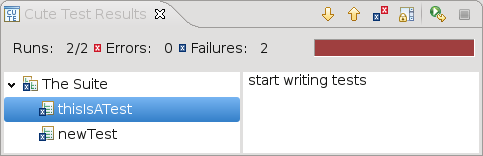
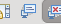
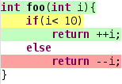

This tutorial describes the process of creating a new CUTE project where all the code (test code and tested code) is in the same project. For more information on how to organize your Code and the different project types see the linked chapters.
Select File > New > C++ Project
Click Next
In the CUTE Version list select the latest version of CUTE installed on your system.
See ... to install an other version of CUTE.
The wizard created a C++ project with 2 source folders. The cute folder contains the CUTE headers, the src folder contains the Test.cpp with a single failing test case. If you enabled the coverage analysis your project has 3 build configurations:
A new run configuration is created. Its name and path are provided by the project and the build configuration.
Now you should see the test application running in the console view. This should also open the CUTE Test Results view
Double clicking on a failing test opens and selects the failing assert in the editor.
Tip: to prevent the Console to hide the CUTE Test Result view on every run you can uncheck the Show Console When Standard Out Changes button in the upper right corner of the view
If you enabled the coverage analysis the code will be highlighted.
